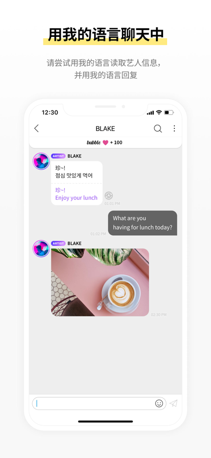
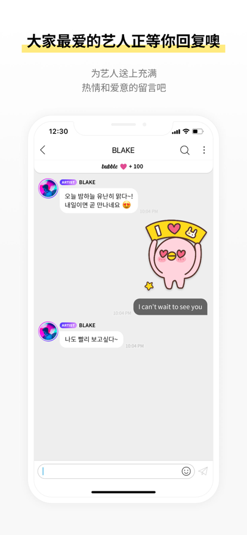

Lysn 深度盘点：从注册到 ACE 会员，这款韩粉社区应用到底值不值得花钱
Lysn 是韩国三大娱乐社共同推出的粉丝社区平台，核心卖点是 bubble 艺人私信服务。本文系统性梳理它的账号体系、订阅机制、粉丝俱乐部层级与聊天室体验，帮你判断是否值得入坑。
Lysn 不是一款普通的追星 App——从Lysn官网上的介绍就能看出来，它背后站着 SM Entertainment、YG Entertainment、HYBE 这三家几乎垄断了韩国流行音乐半壁江山的经纪公司，把它们旗下艺人的粉丝社区统一收编到了同一个产品里。这种"官方独家"的定位让它在同类产品中几乎没有真正的竞争对手——想收到 aespa 成员的私人消息，你只能来 Lysn。也正因为如此，很多韩粉第一次打开 Lysn 时面对的是一套相当完整、也相当复杂的付费体系：从账号注册到 bubble 订阅，再到 ACE 粉丝俱乐部升级，每个环节都有自己的门槛和规则。
这篇盘点想做的事情很简单：把 Lysn 到底能做什么、哪些功能是免费的、哪些要花钱、花了钱能得到什么，一次性捋清楚。
账号体系：邮箱 + 手机号双验证的准入门槛
Lysn 的注册门槛比大多数社交应用高——先从下载装上应用，之后还要过邮箱和手机号两道验证，缺一不可。邮箱建议用 Gmail、Outlook 这类国际通用的邮箱服务商，国内的 @hotmail 和 @office365 域经常被 Lysn 的邮件服务器误判为垃圾邮件，导致验证卡壳。手机号则需要正确选择国家区号——中国内地用户必须选 +86，香港澳门用户选错区号直接验证失败，没有重试余地。
验证完成后设置昵称、勾选服务协议，账号就创建好了。注册成功的引导会让你选择感兴趣的艺人团体，这一步决定了后续社区的推荐内容。值得一提的是，Lysn 默认不在公开社区显示完整的手机号或邮箱，隐私设置里也能进一步收紧个人资料的可见范围，这一点做得比较克制。

bubble 订阅：Lysn 的核心付费功能
如果说账号体系是入场券，那 bubble 才是 Lysn 的真正核心。这是艺人发送私人消息给付费订阅用户的服务——不是群发通知，是一对一的聊天室体验，艺人发文字、语音、图片、视频，订阅者可以在限定次数内回复。
购买与成员选择
完成使用券支付后，Lysn 会弹出成员选择界面。每张使用券对应一个艺人成员的订阅位，买了 N 张就能选 N 位。选成员时可以多选分给不同团体，也可以全堆给同一个成员——后者技术上可行但没有实际意义，一位艺人一张使用券就够了，多给不会增加消息量或回复额度。选择完成后订阅即时生效，CHATS 页面会立刻出现对应艺人的聊天室入口。
中途更换成员
订阅周期内随时可以更换艺人，操作路径是 More → bubble → 点击使用券 → 编辑成员。更换本身不产生额外费用，也不影响剩余订阅期。但有两个关键限制需要提前知道：旧成员的聊天室消息不会迁移，更换后旧消息仍然留在旧聊天室里，只是不会再收到新消息；删除旧聊天室会清空所有历史记录，且不可恢复。
聊天室体验
进入聊天室后看到的是典型的即时通讯界面，顶部显示艺人头像和名字，消息区按时间线排列。艺人能发送的内容类型相当丰富：文字、语音、图片、视频、Sticker 贴纸（v1.4.4 新增）、投票入口（v1.5.3 新增）。每条消息都可以长按收藏到 OUR BOX，语音能播放、图片能保存，整体交互和主流 IM 应用没有区别。
右上角的更多菜单还藏着翻译设置（自动翻译为你选择的语言）、聊天室壁纸、通知开关等实用功能。回复次数的剩余额度会实时显示在输入框上方，提醒你省着点用。

粉丝俱乐部层级：从 BASIC 到 ACE
Lysn 的粉丝俱乐部分两级：BASIC 是免费层，注册账号并加入某个艺人社区就自动获得；ACE 是付费升级层，需要通过外部站点购买会员码来激活。
BASIC 会员能浏览社区公开内容、发帖、参与讨论，但权限有限。ACE 会员解锁的内容包括艺人发布的独家内容、线下活动的优先参与权、生日贺卡等专属福利，具体权益因艺人而异。升级流程比 bubble 订阅复杂不少：先在 Lysn 社区里找到自己的粉丝俱乐部会员号，然后跳转到 YES24 外部站点下单购买会员码，支付成功后收到一串数字加字母的组合，再回到 Lysn 社区输入激活。整个过程涉及两次跨站跳转，会员号输错直接导致激活失败，没有中间缓冲。
会员码本身有兑换截止日期（通常购买后 30-90 天内必须输入），过期作废；激活后 ACE 会员按艺人设定的周期生效，一般是 365 天。这套设计的好处是外部站点承担了支付压力，坏处是用户体验被切割得支离破碎——Lysn 内不能直接完成全部付费流程，好在文档里把完整操作流程拆解得很清楚。
短板也要说
Lysn 的产品设计明显偏韩国本土用户，国际用户使用时有几个不太舒服的地方。
首先是支付依赖外部站点。bubble 使用券的支付还在 Lysn 应用内完成，但 ACE 会员必须跳到 YES24 这类韩流电商网站，部分地区需要代理才能访问，增加了相当多的摩擦。其次是地区限制，YES24 不是所有国家和地区都支持，部分东南亚用户连购买页面都打不开。第三是bubble 消息不迁移的硬限制——更换订阅成员后旧聊天室不会自动消失，历史消息也不能导出，只能被动保留或手动删除，对喜欢整理聊天记录的用户不够友好。最后是注册环节的邮箱垃圾邮件问题，Lysn 官方 FAQ 自己都承认 @hotmail 和 @office365 域经常收不到验证邮件，这个 bug 存在多年仍未彻底修复。
什么样的人该用它
Lysn 不是面向所有追星用户的产品，它的设计目标和付费门槛筛选出了三类明确的人群。
第一类是 K-pop 重度粉丝，尤其是 SM、YG、HYBE 旗下艺人的追粉。bubble 私信是目前最接近"艺人一对一互动"的官方渠道，没有机器人自动回复，消息里偶尔能看到艺人的真实日常片段——这是免费社区内容无法替代的价值。
第二类是喜欢收集独家周边的粉丝。ACE 会员的线下活动优先参与权、生日贺卡等福利，配合 bubble 的消息收藏功能，构成了一套完整的"官方追星档案"体系。如果你习惯整理艺人的每一条消息和每一张照片，OUR BOX 就是为此设计的。
第三类是想低成本试水的新人。bubble 使用券按订阅周期计费，短周期的券门槛不高，可以先买一张体验一下聊天室的实际感受，再决定要不要长期订阅。社区浏览和艺人主页访问完全免费，注册就能逛。
总的来说，Lysn 是一个定位清晰、功能闭环完整但体验细节粗糙的官方粉丝平台。它没有试图做成一个"全韩流社区"，而是牢牢守住了自家艺人的私域流量池——这个策略让它在核心用户群体里有极高的忠诚度，也让非目标用户很难理解它的价值。如果你的本命艺人恰好在这三家社，Lysn 值得装上；如果只是泛泛地关注韩流，它可能显得太重了。市面上关于 Lysn 的中文资料一直比较散，我手头整理的那套操作说明同步放在了GitHub、Gitee和GitCode上，随时能查。